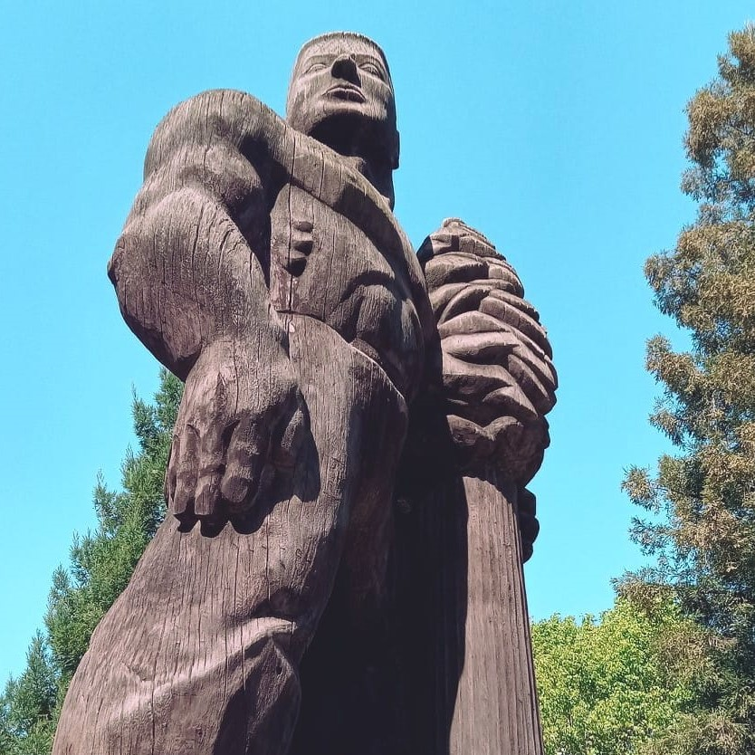

Graduating from COS
I will be graduating from the College of the Sequoias, but I will still be attending COS through the Work Experience Program (the program that helped me land my internship with the Visalia Rawhide)
so that I can receive some additional college credit.
This is so that if I ever decide to attend a 4-year college, I can transfer my credits from my internship to a 4-year college bachelor's degree program.